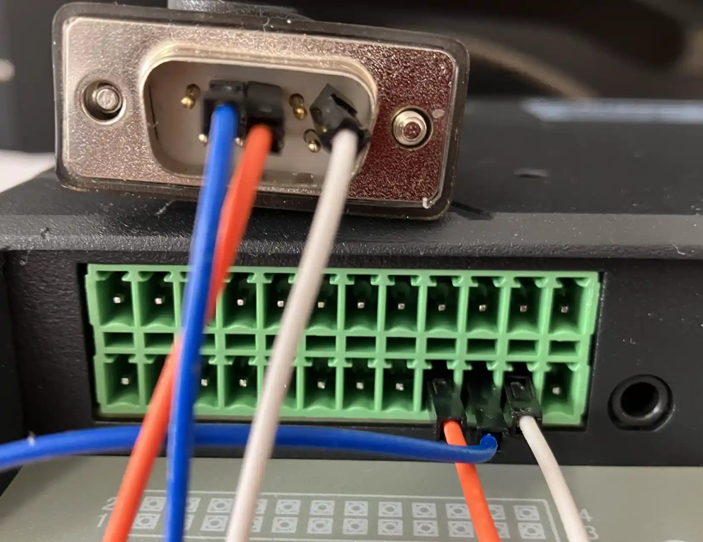

Yocto Linux OS¶
Yocto Linux (OpenSTLinux) on STM32MP257F User Manual
This is the software manual for STM32MP257F Chipsee industrial PC. If you’ve never developed on this hardware with a Yocto Linux OS, this manual can get you started quickly.
Supported Chipsee PCs: all Chipsee STM32MP257F based industrial PCs, including but not limited to:
PPC-A35-070 (PN: CS10600-STMP25-070P)
PPC-A35-101 (PN: CS12800-STMP25-101P)
PPC-A35-133 (PN: CS19108-STMP25-133P)
PPC-A35-156 (PN: CS19108-STMP25-156P)
When you develop software on the Chipsee industrial PC, you can open the hardware manual beside this software manual, to aid you in wiring your devices.
In this manual, main topics are:
How to connect to the device from your workstation.
How to use the hardware resources such as RS232, RS485, CAN and GPIO, etc.
How to play, record an audio, how to play a video.
How to connect and set WiFi/Ethernet network; how to connect Bluetooth.
How to flash OS firmware.
Note
Unless specified, all commands are executed with root priviledge in this document. Default user is weston, you can type su to switch to root user.
System Information¶
Out of Box System
Description |
|
|---|---|
Kernel |
6.1 |
Uboot |
u-boot 2022.10 |
OS |
aarch64 GNU/Linux |
GCC |
N/A |
QT |
6.5.3 |
username/password |
root / no password |
Window Manager |
Wayland Weston |
Desktop Environment |
Weston |
Prepare for Developing¶
To get started, you first need to power on the Chipsee industrial PC, then you may want to connect to this PC from your own laptop or computer to control it. Let’s prepare some hardware and software to start developing.
Prepare the Hardware¶
For products with a screen of 7” and BOX product, a power adapter between 9V ~ 30V DC output is required.
For products with a screen of 10.1” or larger, you need a DC adapter with output between 15V ~ 30V.
For example, you can use a switching power DC adapter; or use a laptop adapter with proper voltage such as 18.5V, 19V etc when developing; or use a 12V power adapter from a used router for small screen products when developing.
To connect to the Chipsee industrial PC from your workstation, you can use:
A USB to serial cable (if you need serial debug, i.e. connect to RS232 serial debug port).
An Ethernet cable (if you want to SSH into the Chipsee industrial PC). You may also use WiFi if your Chipsee industrial PC supports WiFi, in this case you don’t need the Ethernet cable.
A USB type-C cable (if you want to flash a new OS or backup your OS image).
Prepare the Software¶
The software listed below are not mandatory, they’re recommendations because we find them easy to use:
To SSH into a Chipsee industrial PC, you may find PuTTY on Windows handy; for Linux and macOS users, a terminal app should come with your OS out of box, like Terminal/iTerm2 on macOS and xterm on Linux.
To flash OS firmware image to the product, you need STM32CubeProgrammer software: https://www.st.com/en/development-tools/stm32cubeprog.html. It supports Windows, Linux and macOS. It has both GUI and CLI mode.
Connect to the Device¶
There are 2 ways to connect to the device from your workstation:
From Serial RS232 port
From Ethernet or Wi-Fi (SSH)
Let’s take a look at these connecting methods one by one.
Connect From Serial Port¶
[ Cheatsheet for experienced developers: username is root, no password, pin is RS232_2 ]
By default serial debug is enabled, you don’t have to do anything to use the RS232_2 as a serial debug port.
Connect the Wire¶
In our pre-built Yocto Linux OS, the RS232_2 serves as a serial debug port. We can connect a RS232 cable between the Chipsee industrial PC and our workstation, allowing us to control the Chipsee industrial PC from our workstation.
To get started, you need a USB to serial cable, we will use a USB Type-C to DB-9 cable as an example, you can use a USB-A cable as well, you need to plug the USB end to your workstation, and the serial end to the Chipsee device.
I will plug the USB Type-C port to a Mac (Windows and Linux work fine too), and then I would use three female to female dupont wires, to connect 3 of the DB-9 pins to GND and RS232_2 (RX and TX) pins of my Chipsee industrial PC.

Use a USB to Serial Cable to Connect the Chipsee Industrial PC with Your Workstation
Take a look at the image below, this is the 10.1” product, if your product has a different screen size, check out the hardware document to find out which pins are RS232_2 TX and RX.
Note
Each hardware doc has a “RS232/RS485/CAN” section, it lists which is the RS232_2 TX and RX in the image and the table of their respective docs. Find your model here (Industrial PCs Powered by STMicroelectronics) and scroll to the “RS232/RS485/CAN” section to check out.
You should connect the DB-9’s RX to the device’s TX, and DB-9’s TX to the device’s RX, you should also connect their GNDs (the white wire).
{kind=link}
Connect 3 Pins with Dupont Wires (or with a phoenix connector)
Linux and MacOS¶
For MacOS and Linux users, you will need a program called screen. It should be already installed on most MacOS and Linux distributions(if the screen program is not installed on your computer, you can search how to install it, for example, “apt install screen” on Debian). Open your terminal and type screen -v. If the screen program is already installed in your computer, you should see a version number, like that in the image below:

Confirm You Have the Screen Program (MacOS & Linux)
Because the USB end of the cable is plugged into our workstation, we need to know which USB device it is in Linux/MacOS. We can find it out by testing:
ls /dev/tty*You might see many tty devices listed in your terminal, and cannot decide which is your USB to RS232 cable. Here is a tip: you can unplug the cable first, type the command to see what is listed in the OS. Then you plug it back in, and test again, to see what has recently appeared. The difference between the two should be your cable. In the image below, we found the /dev/tty.usbserial-10 is our USB to RS232 cable.

Find Out Which Device is Your USB to Serial Cable
You can put the device name you found to the screen program as an argument. To connect to the device (115200 is the default baud rate of the device):
screen /dev/tty.usbserial-10 115200
You will see a blank screen, press Enter, you will be logged in with root.
The Screen Program Connects Your Workstation to the Industrial PC’s Console
If you want to exit the screen program, you can press Ctrl+A then press K.
The program will ask you if you want to kill this window, then press y to exit the program.
Press “Ctrl + A” Follow by a “K” to Exit the Program
{kind=link}
{kind=link}
Windows¶
For Windows users, you don’t need to install a specific “driver” kind of thing for Windows to recognize a Chipsee PC, but before proceeding, you should see a COM port appear/disappear when plug/unplug your USB to serial cable in Windows.
Most USB to serial cables don’t require driver installation on Windows10/11. But if you find your cable isn’t recognizable by Windows, try checking the cable’s manufacturer’s website to learn more about it. Most of the time, simply doing a Windows update should do the trick, Windows can detect the cable’s USB driver and install it for you.
You could install a program called PuTTY (or XShell etc), here is a link to download the software: https://www.putty.org/. If you’re comfortable with other clients other than PuTTY, you can use those as well.
With PuTTY in your belt, let’s find out which COM port your USB to RS232 cable is using. One tip is to check the Microsoft Windows Device Manager (right click Windows icon, select Device Manager). Check which COM port appears/disappears when you plug/unplug the USB to serial cable. And that COM port device should be your USB to RS232 cable. Keep a note of the COM port your serial cable is using, let’s say it’s “your-com”, or “COM3” in this example.

COM3 is the USB to Serial Cable
Open the PuTTY program, select Session, choose Serial in the radio buttons, and fill the COM port(your-com, or COM3 in this example) you found in the Microsoft Windows Device Manager, and choose 115200 as baud rate, then click Open.

Input your-com in the Serial Line field, in our case COM3
Now you should be able to connect from your workstation to the device through the serial port. You can hit Enter, then you should be logged in with root user:
1root@stm32mp2:~#
Connect From Network (SSH)¶
[Cheatsheet for experienced developers: username: root, no password]
By default SSH is enabled.
You can SSH to the device when it’s connected to the network, either through Wi-Fi or Ethernet.
First make sure you’re connected through WiFi or Ethernet (to learn how, jump to the Network section below. Ethernet can be automatically detected, WiFi needs some configuration).
Then you can check the IP address with ifconfig, Ethernet is endX, in the image below, it’s end1 (on 10.1” or larger variants is end1, on 7” variant is end1/end2):
{kind=link}
Check IP with ifconfig
1root@stm32mp2:~# ifconfig
2end1 Link encap:Ethernet HWaddr 5A:B9:32:40:FD:B8
3 inet addr:192.168.50.123 Bcast:192.168.50.255 Mask:255.255.255.0
4 inet6 addr: fe80::58b9:32ff:fe40:fdb8/64 Scope:Link
5 UP BROADCAST RUNNING MULTICAST MTU:1500 Metric:1
6 RX packets:1095 errors:0 dropped:157 overruns:0 frame:0
7 TX packets:143 errors:0 dropped:0 overruns:0 carrier:0
8 collisions:0 txqueuelen:1000
9 RX bytes:193587 (189.0 KiB) TX bytes:19438 (18.9 KiB)
10 Interrupt:69 Base address:0x8000
11
12lo Link encap:Local Loopback
13 inet addr:127.0.0.1 Mask:255.0.0.0
14 inet6 addr: ::1/128 Scope:Host
15 UP LOOPBACK RUNNING MTU:65536 Metric:1
16 RX packets:96 errors:0 dropped:0 overruns:0 frame:0
17 TX packets:96 errors:0 dropped:0 overruns:0 carrier:0
18 collisions:0 txqueuelen:1000
19 RX bytes:8605 (8.4 KiB) TX bytes:8605 (8.4 KiB)
20
21usb0 Link encap:Ethernet HWaddr B2:9E:A0:2A:B8:37
22 UP BROADCAST MULTICAST MTU:1500 Metric:1
23 RX packets:0 errors:0 dropped:0 overruns:0 frame:0
24 TX packets:0 errors:0 dropped:0 overruns:0 carrier:0
25 collisions:0 txqueuelen:1000
26 RX bytes:0 (0.0 B) TX bytes:0 (0.0 B)
27
28wlan0 Link encap:Ethernet HWaddr 14:5D:34:F2:E9:AA
29 UP BROADCAST MULTICAST MTU:1500 Metric:1
30 RX packets:0 errors:0 dropped:0 overruns:0 frame:0
31 TX packets:0 errors:0 dropped:0 overruns:0 carrier:0
32 collisions:0 txqueuelen:1000
33 RX bytes:0 (0.0 B) TX bytes:0 (0.0 B)
Your-ip of end1(wired) and wlan0(wireless) will be displayed. In the case above the IP address is 192.168.50.123 through end1.
Then we can ssh from our workstation with this IP address.
Linux / MacOS¶
For Linux and MacOS users, you can use your terminal and type:
ssh root@your-ip
# In our case, your-ip is 192.168.50.123
ssh root@192.168.50.123
The username is root, and no password.
{kind=link}
SSH with your-ip
Windows¶
For Windows users using PuTTY, you can choose Session, input username@your-ip (in our case root@192.168.50.123, yours should be different) in the Host Name field. Port Number should remain 22, choose SSH as the connection type in the radio buttons, click “Open”. There is no password by default.

Input username@your-ip in the Host Name field, in our case root@192.168.50.123
Now you have connected to the device through the network.
System Resources¶
SD Card¶
When a micro SD card (TF card) is inserted to the device, it will appear as mmcblk0, you can check it by lsblk, note the last line mmcblk0 179:96 0 29.7G 0 disk is the 32GB SD card:
1root@stm32mp2:~# lsblk
2
3// Before insertion
4root@stm32mp2:~# lsblk
5NAME MAJ:MIN RM SIZE RO TYPE MOUNTPOINTS
6mmcblk1 179:0 0 14.6G 0 disk
7|-mmcblk1p1 179:1 0 512K 0 part
8|-mmcblk1p2 179:2 0 512K 0 part
9|-mmcblk1p3 179:3 0 4M 0 part
10|-mmcblk1p4 179:4 0 4M 0 part
11|-mmcblk1p5 179:5 0 512K 0 part
12|-mmcblk1p6 179:6 0 64M 0 part /boot
13|-mmcblk1p7 179:7 0 183M 0 part /vendor
14|-mmcblk1p8 179:8 0 3G 0 part /
15`-mmcblk1p9 179:9 0 11.3G 0 part /usr/local
16mmcblk1boot0 179:32 0 4M 1 disk
17mmcblk1boot1 179:64 0 4M 1 disk
18
19// After insertion
20root@stm32mp2:~# lsblk
21NAME MAJ:MIN RM SIZE RO TYPE MOUNTPOINTS
22mmcblk1 179:0 0 14.6G 0 disk
23|-mmcblk1p1 179:1 0 512K 0 part
24|-mmcblk1p2 179:2 0 512K 0 part
25|-mmcblk1p3 179:3 0 4M 0 part
26|-mmcblk1p4 179:4 0 4M 0 part
27|-mmcblk1p5 179:5 0 512K 0 part
28|-mmcblk1p6 179:6 0 64M 0 part /boot
29|-mmcblk1p7 179:7 0 183M 0 part /vendor
30|-mmcblk1p8 179:8 0 3G 0 part /
31`-mmcblk1p9 179:9 0 11.3G 0 part /usr/local
32mmcblk1boot0 179:32 0 4M 1 disk
33mmcblk1boot1 179:64 0 4M 1 disk
34mmcblk0 179:96 0 29.7G 0 disk
35`-mmcblk0p1 179:97 0 29.7G 0 part
Or with fdisk -l, the 32GB TF card appears as “Disk /dev/mmcblk0: 29.72 GiB”:
1root@stm32mp2:~# fdisk -l
2Disk /dev/mmcblk1: 14.56 GiB, 15634268160 bytes, 30535680 sectors
3Units: sectors of 1 * 512 = 512 bytes
4Sector size (logical/physical): 512 bytes / 512 bytes
5I/O size (minimum/optimal): 512 bytes / 512 bytes
6Disklabel type: gpt
7Disk identifier: FFB7903C-C81B-4767-976F-351B3853256D
8
9Device Start End Sectors Size Type
10/dev/mmcblk1p1 1024 2047 1024 512K unknown
11/dev/mmcblk1p2 2048 3071 1024 512K unknown
12/dev/mmcblk1p3 3072 11263 8192 4M unknown
13/dev/mmcblk1p4 11264 19455 8192 4M unknown
14/dev/mmcblk1p5 19456 20479 1024 512K unknown
15/dev/mmcblk1p6 20480 151551 131072 64M Linux filesystem
16/dev/mmcblk1p7 151552 526335 374784 183M Linux filesystem
17/dev/mmcblk1p8 526336 6817791 6291456 3G Linux filesystem
18/dev/mmcblk1p9 6817792 30534655 23716864 11.3G Linux filesystem
19
20
21Disk /dev/mmcblk1boot0: 4 MiB, 4194304 bytes, 8192 sectors
22Units: sectors of 1 * 512 = 512 bytes
23Sector size (logical/physical): 512 bytes / 512 bytes
24I/O size (minimum/optimal): 512 bytes / 512 bytes
25
26
27Disk /dev/mmcblk1boot1: 4 MiB, 4194304 bytes, 8192 sectors
28Units: sectors of 1 * 512 = 512 bytes
29Sector size (logical/physical): 512 bytes / 512 bytes
30I/O size (minimum/optimal): 512 bytes / 512 bytes
31
32
33Disk /dev/mmcblk0: 29.72 GiB, 31914983424 bytes, 62333952 sectors
34Units: sectors of 1 * 512 = 512 bytes
35Sector size (logical/physical): 512 bytes / 512 bytes
36I/O size (minimum/optimal): 512 bytes / 512 bytes
37Disklabel type: dos
38Disk identifier: 0xb585bdd7
39
40Device Boot Start End Sectors Size Id Type
41/dev/mmcblk0p1 8192 62333951 62325760 29.7G c W95 FAT32 (LBA)
You can mount the SD card to /run/media/sd1 with mount command:
1root@stm32mp2:~# mkdir /run/media/sd1 -p
2root@stm32mp2:~# mount /dev/mmcblk0p1 /run/media/sd1
3root@stm32mp2:~# lsblk
4NAME MAJ:MIN RM SIZE RO TYPE MOUNTPOINTS
5mmcblk1 179:0 0 14.6G 0 disk
6|-mmcblk1p1 179:1 0 512K 0 part
7|-mmcblk1p2 179:2 0 512K 0 part
8|-mmcblk1p3 179:3 0 4M 0 part
9|-mmcblk1p4 179:4 0 4M 0 part
10|-mmcblk1p5 179:5 0 512K 0 part
11|-mmcblk1p6 179:6 0 64M 0 part /boot
12|-mmcblk1p7 179:7 0 183M 0 part /vendor
13|-mmcblk1p8 179:8 0 3G 0 part /
14`-mmcblk1p9 179:9 0 11.3G 0 part /usr/local
15mmcblk1boot0 179:32 0 4M 1 disk
16mmcblk1boot1 179:64 0 4M 1 disk
17mmcblk0 179:96 0 29.7G 0 disk
18`-mmcblk0p1 179:97 0 29.7G 0 part /run/media/sd1
To unmount the SD card, use umount command:
1root@stm32mp2:~# umount /run/media/sd1/
2root@stm32mp2:~# lsblk
3NAME MAJ:MIN RM SIZE RO TYPE MOUNTPOINTS
4mmcblk1 179:0 0 14.6G 0 disk
5|-mmcblk1p1 179:1 0 512K 0 part
6|-mmcblk1p2 179:2 0 512K 0 part
7|-mmcblk1p3 179:3 0 4M 0 part
8|-mmcblk1p4 179:4 0 4M 0 part
9|-mmcblk1p5 179:5 0 512K 0 part
10|-mmcblk1p6 179:6 0 64M 0 part /boot
11|-mmcblk1p7 179:7 0 183M 0 part /vendor
12|-mmcblk1p8 179:8 0 3G 0 part /
13`-mmcblk1p9 179:9 0 11.3G 0 part /usr/local
14mmcblk1boot0 179:32 0 4M 1 disk
15mmcblk1boot1 179:64 0 4M 1 disk
16mmcblk0 179:96 0 29.7G 0 disk
17`-mmcblk0p1 179:97 0 29.7G 0 part
Then you can eject the SD card physically.
USB Flash Drive¶
USB flash drive on the USB ports will be automatically detected on /dev/sdX (X is the usually a/b, e.g. /dev/sda or /dev/sdb, depending on the order it is inserted), you can check it with lsblk:
1root@stm32mp2:~# lsblk
2NAME MAJ:MIN RM SIZE RO TYPE MOUNTPOINTS
3sda 8:0 1 59G 0 disk
4`-sda1 8:1 1 59G 0 part
5mmcblk1 179:0 0 14.6G 0 disk
6|-mmcblk1p1 179:1 0 512K 0 part
7|-mmcblk1p2 179:2 0 512K 0 part
8|-mmcblk1p3 179:3 0 4M 0 part
9|-mmcblk1p4 179:4 0 4M 0 part
10|-mmcblk1p5 179:5 0 512K 0 part
11|-mmcblk1p6 179:6 0 64M 0 part /boot
12|-mmcblk1p7 179:7 0 183M 0 part /vendor
13|-mmcblk1p8 179:8 0 3G 0 part /
14`-mmcblk1p9 179:9 0 11.3G 0 part /usr/local
15mmcblk1boot0 179:32 0 4M 1 disk
16mmcblk1boot1 179:64 0 4M 1 disk
In the example above, the USB drive is detected on /dev/sda.
With two USB flash drive plugged in to the device, they will be detected on /dev/sda and /dev/sdb:
1root@stm32mp2:~# fdisk -l
2Disk /dev/mmcblk1: 14.56 GiB, 15634268160 bytes, 30535680 sectors
3...
4
5Disk /dev/sda: 58.98 GiB, 63333990400 bytes, 123699200 sectors
6Disk model: USB Flash Drive
7...
8
9Device Boot Start End Sectors Size Id Type
10/dev/sda1 * 64 123699199 123699136 59G c W95 FAT32 (LBA)
11
12
13Disk /dev/sdb: 28.65 GiB, 30765219840 bytes, 60088320 sectors
14Disk model: SanDisk 3.2Gen1
15...
16
17Device Boot Start End Sectors Size Id Type
18/dev/sdb4 * 256 60088319 60088064 28.7G c W95 FAT32 (LBA)
Note that the “Disk /dev/sda: 58.98 GiB” is a 64GB usb flash drive; “Disk /dev/sdb: 28.65 GiB” is a 32GB usb flash drive; “Disk /dev/mmcblk1: 14.56 GiB” is the internal eMMC storage.
Backlight¶
You can use the following commands to turn on / turn off the backlight:
- Turn on backlight:
echo 1 > /dev/brightness
- Turn off backlight (screen goes black):
echo 0 > /dev/brightness
Warning
LED¶
There is a red LED beside power input port, you can control the LED by writing a file:
# Turn on the red LED
echo 1 > /sys/class/leds/red:heartbeat/brightness
cat /sys/class/leds/red:heartbeat/brightness
1
# Turn off the red LED
echo 0 > /sys/class/leds/red:heartbeat/brightness
cat /sys/class/leds/red:heartbeat/brightness
0
You can use your programming language to control it as well. Simply use the file (IO) system library to write this /sys/class/leds/red:heartbeat/brightness file.
Buzzer¶
The Chipsee industrial PC has one buzzer.
Refer to the tables below for a detailed port definition:
Definition |
GPIO |
GPIOD Chip |
GPIOD Line |
|---|---|---|---|
Buzzer |
PJ10 |
9 |
10 |
You can control it with gpiod as follows:
gpioset PJ10=1 # enable buzzer (be careful, it's really loud!)
gpioset PJ10=0 # disable buzzer
gpioset -t 500ms -c gpiochip9 10=active # toggle the buzzer every 0.5 second
We can also cross-compile toggle_buzzer_value_V2.c on Ubuntu 20.04 or any other Linux X86_64 system and execute the toggle_buzzer_value_V2 on the target Chipsee ARM board. In doing so, there’s no requirement to install the libgpiod development packages on the target Chipsee ARM board system. However, we do need to install the SDK and configure the environment accordingly. Refer to Development chapter to install SDK.
$ source /opt/st/stm32mp2/4.2.4-snapshot/environment-setup-cortexa35-ostl-linux
$ echo ${CC}
$ wget -c https://chipsee-tmp.s3.amazonaws.com/SourcesArchives/HARDWARETEST/toggle_buzzer_value_V2.c
$ ${CC} toggle_buzzer_value_V2.c -o toggle_buzzer_value_V2 -lgpiod
Then put the gpiotest to target Chipsee ARM board over ssh or other solutions you like.
root@stm32mp2:~# ./toggle_buzzer_value_V2
Serial Port RS232 and RS485¶
Check the table below of the RS232/RS485 pin definition to wire your ports:
7 inch / Box products
PPC-A35-070 (PN: CS10600-STMP25-070P)
RS232 / RS485 / CAN Pin Definition for 7inch/Box products¶ Pin Number
Definition
Description
OS Node
Pin 16
CAN1_H
CPU CAN1 H signal
Pin 15
CAN1_L
CPU CAN1 L signal
CAN1
Pin 14
CAN0_H
CPU CAN0 H signal
Pin 13
CAN0_L
CPU CAN0 L signal
CAN0
Pin 12
RS485_7-
CPU UART7 RS485 –(B) signal
Pin 11
RS485_7+
CPU UART7 RS485 +(A) signal
/dev/ttySTM4
Pin 10
RS485_6-
CPU UART6 RS485 –(B) signal
Pin 9
RS485_6+
CPU UART6 RS485 +(A) signal
/dev/ttySTM3
Pin 8
RS485_4-
CPU UART4 RS485 –(B) signal
Pin 7
RS485_4+
CPU UART4 RS485 +(A) signal
/dev/ttySTM2
Pin 6
RS232_5_RXD
CPU UART5 RS232 RXD signal
Pin 5
RS232_5_TXD
CPU UART5 RS232 TXD signal
/dev/ttySTM1
Pin 4
RS232_2_RXD
CPU UART2 RS232 RXD signal, Debug Port
Pin 3
RS232_2_TXD
CPU UART2 RS232 TXD signal, Debug Port
/dev/ttySTM0
Pin 2
GND
System Ground
Pin 1
+5V
System +5V Power Output, No more than 1A Current output
10.1 inch and above products
PPC-A35-101 (PN: CS12800-STMP25-101P)
PPC-A35-133 (PN: CS19108-STMP25-133P)
PPC-A35-156 (PN: CS19108-STMP25-156P)
RS232 / RS485 / CAN Pin Definition for 10.1 inch and above products¶ Pin Number
Definition
Description
OS Node
2
CAN1_H
CPU CAN1 H signal
4
CAN1_L
CPU CAN1 L signal
CAN1
1
CAN0_H
CPU CAN0 H signal
3
CAN0_L
CPU CAN0 L signal
CAN0
5
RS485_6-
CPU UART6 RS485 –(B) signal
7
RS485_6+
CPU UART6 RS485 +(A) signal
/dev/ttySTM3
9
RS485_4-
CPU UART4 RS485 –(B) signal
11
RS485_4+
CPU UART4 RS485 +(A) signal
/dev/ttySTM2
13
RS232_5_RXD
CPU UART5 RS232 RXD signal
15
RS232_5_TXD
CPU UART5 RS232 TXD signal
/dev/ttySTM1
17
RS232_2_RXD
CPU UART2 RS232 RXD signal, Debug Port
19
RS232_2_TXD
CPU UART2 RS232 TXD signal, Debug Port
/dev/ttySTM0
21
GND
System Ground
23
+5V
System +5V Power Output, No more than 1A Current output
{kind=link}
The 120 Ohm match resistor is NOT mounted on the RS485 port.
RS485 ports are half-duplex, the hardware can switch the Tx/Rx direction automatically. RS232 ports are full-duplex.
Controller Area Network (CAN)¶
To use CAN, you must add one 120Ω resistor between CAN_H and CAN_L on one of the two devices, as shown in the figure below.
Note
The Chipsee industrial PC doesn’t mount the 120Ω matched resistor on all CAN signals by default.

Connecting CAN¶
7 inch product
PPC-A35-070 (PN: CS10600-STMP25-070P)
Pin Number |
Definition |
Description |
OS Node |
|---|---|---|---|
Pin 16 |
CAN1_H |
CPU CAN1 H signal |
|
Pin 15 |
CAN1_L |
CPU CAN1 L signal |
CAN1 |
Pin 14 |
CAN0_H |
CPU CAN0 H signal |
|
Pin 13 |
CAN0_L |
CPU CAN0 L signal |
CAN0 |
10.1+ inch products
PPC-A35-101 (PN: CS12800-STMP25-101P)
PPC-A35-133 (PN: CS19108-STMP25-133P)
PPC-A35-156 (PN: CS19108-STMP25-156P)
Pin Number |
Definition |
Description |
OS Node |
|---|---|---|---|
2 |
CAN1_H |
CPU CAN1 H signal |
|
4 |
CAN1_L |
CPU CAN1 L signal |
CAN1 |
1 |
CAN0_H |
CPU CAN0 H signal |
|
3 |
CAN0_L |
CPU CAN0 L signal |
CAN0 |
To check the CAN devices status with ip link, on the 10.1 inch device, there are two CAN devices (can0 and can1):
root@stm32mp2:~# ip link
...
3: can0: <NOARP,ECHO> mtu 16 qdisc noop state DOWN mode DEFAULT group default qlen 10
link/can
4: can1: <NOARP,ECHO> mtu 16 qdisc noop state DOWN mode DEFAULT group default qlen 10
link/can
...
Here are a few examples to test CAN using CAN utils.
Set the bit-rate to 1Mbits/sec using the following command:
ip link set can0 down
ip link set can0 type can bitrate 1000000
Bring up the device using the command:
ip link set can0 up
Transfer packets
cansend can0 5A1#11.2233.44556677.88
Receive data from CAN bus
candump can0
Bring down the device
ip link set can0 down
If your product has 2 CAN ports CAN0 and CAN1, you can test CAN by letting them talk to each other:
// CAN0 console
root@stm32mp2:~# candump can0
// CAN1 console
root@stm32mp2:~# cansend can1 5A1#11.2233.44556677.88
root@stm32mp2:~# cansend can1 1F334455#1122334455667788
// CAN0 console
can0 5A1 [8] 11 22 33 44 55 66 77 88
can0 1F334455 [8] 11 22 33 44 55 66 77 88
{kind=link}
CAN0 and CAN1 Talk to Each Other
GPIO¶
There are 8 GPIOs, 4 Output, and 4 Input, they are all optical isolated. You can control the output or input pin voltage by feeding the VDD_ISO voltage. The pin voltage should be from 5V to 24V. You should use an external reliable power supply for the VDD_ISO and GND_ISO.
We don’t recommend testing GPIO with the onboard +5V/GND (wiring the +5V to VDD_ISO and wiring GND to GND_ISO), in most cases we recommend using an external power source for VDD_ISO and GND_ISO.
For:
7 inch product: PPC-A35-070 (PN: CS10600-STMP25-070P)
- 10.1+ inch products:
PPC-A35-101 (PN: CS12800-STMP25-101P)
PPC-A35-133 (PN: CS19108-STMP25-133P)
PPC-A35-156 (PN: CS19108-STMP25-156P)
Refer to the tables below for a detailed port definition:
Definition |
GPIO |
GPIOD Chip |
GPIOD Line |
|---|---|---|---|
OUT1 |
PZ6 |
11 |
6 |
OUT2 |
PZ7 |
11 |
7 |
OUT3 |
PZ8 |
11 |
8 |
OUT4 |
PZ9 |
11 |
9 |
IN1 |
PZ5 |
11 |
5 |
IN2 |
PZ4 |
11 |
4 |
IN3 |
PZ3 |
11 |
3 |
IN4 |
PZ2 |
11 |
2 |
To set GPIO out to high with gpiod:
# Set OUT1 to High (use "gpioinfo" to check GPIOD Chip and Line)
gpioset --chip 11 6=1
# Set OUT3 and OUT4 (PZ8 PZ9) to Low
gpioset PZ8=0 PZ9=0
To get GPIO input:
# Get the IN4 (PZ2) status:
gpioget PZ2
To detect GPIO event (rising edge and falling edge), e.g. on IN4:
root@stm32mp2:~# gpioget PZ2
"PZ2"=inactive
root@stm32mp2:~# gpiomon PZ2
# Apply OUT1 to IN1 with a dupont wire ...
2441.458788046 rising "PZ2"
2442.808019966 falling "PZ2"
2444.466110745 rising "PZ2"
2446.080942714 falling "PZ2"
2446.082569984 rising "PZ2"
2446.083678586 falling "PZ2"
2446.083739979 rising "PZ2"
2446.083874839 falling "PZ2"
2446.083894112 rising "PZ2"
2446.084150884 falling "PZ2"
We can also cross-compile set_get_line_value_V2.c on Ubuntu 20.04 or any other Linux X86_64 system and execute the set_get_line_value_V2 on the target Chipsee ARM board. In doing so, there’s no requirement to install the libgpiod development packages on the target Chipsee ARM board system. However, we do need to install the SDK and configure the environment accordingly. Refer to Development chapter to install SDK.
$ source /opt/st/stm32mp2/4.2.4-snapshot/environment-setup-cortexa35-ostl-linux
$ echo ${CC}
$ wget -c https://chipsee-tmp.s3.amazonaws.com/SourcesArchives/HARDWARETEST/set_get_line_value_V2.c
$ ${CC} set_get_line_value_V2.c -o set_get_line_value_V2 -lgpiod
Then put the set_get_line_value_V2 to target Chipsee ARM board over ssh or other solutions you like. We use OUT1 and IN1 to demostrate it, we need to feed power 12V~24V between GND_ISO and VDD_ISO, then short OUT1 and IN1 to test.
root@stm32mp2:~# ./set_get_line_value_V2
Bluetooth¶
For more information check the official OpenSTLinux Wiki: https://wiki.st.com/stm32mpu/wiki/Category:Bluetooth
First check if Bluetooth is enabled:
root@stm32mp2:~# hciconfig -a
hci0: Type: Primary Bus: UART
BD Address: 14:5D:34:F2:E9:AB ACL MTU: 1021:8 SCO MTU: 255:12
UP RUNNING
RX bytes:2026 acl:0 sco:0 events:50 errors:0
TX bytes:3023 acl:0 sco:0 commands:52 errors:0
Features: 0xff 0xff 0xff 0xfa 0xdb 0xbd 0x7b 0x87
Packet type: DM1 DM3 DM5 DH1 DH3 DH5 HV1 HV2 HV3
Link policy: RSWITCH HOLD SNIFF PARK
Link mode: PERIPHERAL ACCEPT
Name: 'stm32mp2'
Class: 0x0c0000
Service Classes: Rendering, Capturing
Device Class: Miscellaneous,
HCI Version: 4.1 (0x7) Revision: 0xbc6
LMP Version: 4.1 (0x7) Subversion: 0xd607
Manufacturer: Realtek Semiconductor Corporation (93)
If you see Bluetooth is “Down”, to bring it up:
root@stm32mp2:~# hciconfig hci0 down
root@stm32mp2:~# hciconfig -a
hci0: Type: Primary Bus: UART
BD Address: 14:5D:34:F2:E9:AB ACL MTU: 1021:8 SCO MTU: 255:12
DOWN
...
root@stm32mp2:~# hciconfig hci0 up
root@stm32mp2:~# hciconfig -a
hci0: Type: Primary Bus: UART
BD Address: 14:5D:34:F2:E9:AB ACL MTU: 1021:8 SCO MTU: 255:12
UP RUNNING
...
Scan for Bluetooth device:
root@stm32mp2:~# hcitool scan
Scanning ...
Systemd provides a tool for Bluetooth management: bluetoothctl. Example session with bluetoothclt for scanning, pairing, connecting with a Bose QC35 headphone:
1root@stm32mp2:~# bluetoothctl
2
3Agent registered
4[CHG] Controller 14:5D:34:F2:E9:AB Pairable: yes
5
6[bluetooth]# power on
7Changing power on succeeded
8
9[bluetooth]# agent on
10Agent is already registered
11
12[bluetooth]# default-agent
13Default agent request successful
14
15[bluetooth]# scan on
16Discovery started
17[CHG] Controller 14:5D:34:F2:E9:AB Discovering: yes
18[NEW] Device 60:AB:D2:3D:E1:C3 Bose QC35 II
19[CHG] Device 60:AB:D2:3D:E1:C3 TxPower: -10
20...
21
22[bluetooth]# scan off
23Discovery stopped
24...
25
26[bluetooth]# pair 60:AB:D2:3D:E1:C3
27Attempting to pair with 60:AB:D2:3D:E1:C3
28[CHG] Device 60:AB:D2:3D:E1:C3 Connected: yes
29[CHG] Device 60:AB:D2:3D:E1:C3 Bonded: yes
30...
31[CHG] Device 60:AB:D2:3D:E1:C3 Paired: yes
32Pairing successful
33
34[Bose QC35 II]# connect 60:AB:D2:3D:E1:C3
35Attempting to connect to 60:AB:D2:3D:E1:C3
36[NEW] Endpoint /org/bluez/hci0/dev_60_AB_D2_3D_E1_C3/sep3
37...
38Connection successful
39[NEW] Player /org/bluez/hci0/dev_60_AB_D2_3D_E1_C3/player0 [default]
40[CHG] Transport /org/bluez/hci0/dev_60_AB_D2_3D_E1_C3/sep3/fd0 Volume: 0x0037 (55)
41
42[Bose QC35 II]# quit
Then your Bluetooth headphone is connected, you can test it by playing a video or music, there is a Video Playback Demo preinstalled in the ST Demo program.
For more information, check the official ST Wiki: https://wiki.st.com/stm32mpu/wiki/How_to_scan_Bluetooth_devices
Scan for Bluetooth LE device:
root@stm32mp2:~# hcitool lescan
LE Scan ...
60:09:C3:AE:9A:01 (unknown)
C9:C8:8C:B1:E6:B3 (unknown)
60:AB:D2:3D:E1:C3 LE-Bose QC35 II
For more information, check the official ST Wiki: https://wiki.st.com/stm32mpu/wiki/How_to_scan_BLE_devices
GPS¶
If your product shipped with a GPS module, and a GPS antenna, you can enable the GPS function.
You can use GPS from command line.
Test the GPS function as follows, first, you listen to the GPS info serial port (/dev/ttyUSB1), then, you send AT commands to AT serial port (/dev/ttyUSB2). Finally, GPS information should appear on the info port. This means you will need two terminals opened, one for listening and the other for sending.
GPS Port: /dev/ttyUSB1
AT port: /dev/ttyUSB2
In the first terminal, we use cat to listen for GPS info:
cat /dev/ttyUSB1
# hit Enter, the port will keep listening
# until any information comes to the port(after you send AT command to AT port)
In the second terminal, we send AT commands with microcom, you can also use other programs to send serial commands:
microcom /dev/ttyUSB2 -s 9600
ATE1 # Enable displaying. Hit Enter after you type ATE1
ATI # Print product info
AT+CSQ # Query Signal Level, return [+CSQ: current signal strength, channel bit error rate] e.g.: +CSQ: 19,99 means strength 19 with rate 99
AT+QGPSCFG="gpsnmeatype",31 # Turn on all output type, GGA/RMC/GSV/GSA/VTG, this setting will be saved to NVRAM, persists after reboot
AT+QGPS=1 # enable GPS, wait some minutes, you can get data from terminal.
AT+QGPSEND # disable GPS
{kind=link}
Left: /dev/ttyUSB1 GPS Port, Right: /dev/ttyUSB2 AT Port
Audio¶
Audio Card in OS¶
We will use aplay to play audio, first we need to check which audio card we need to use.
The audio card in the device is ES8388, first check it with aplay -l (lower case “l”):
1 root@stm32mp2:~# aplay -l
2 **** List of PLAYBACK Hardware Devices ****
3 card 0: ES8388 [ES8388], device 0: 400b0000.audio-controller-ES8323 HiFi ES8323 HiFi-0 [400b0000.audio-controller-ES8323 HiFi ES8323 HiFi-0]
4 Subdevices: 1/1
5 Subdevice #0: subdevice #0
In the example, card 0: ES8388 [ES8388] is our audio card. We will need its Subdevice #0. It means we need to select card 0 hardware’s subdevice 0. It is hw:0,0 in aplay.
But the order of audio cards (if there are more than 1 audio cards) might change after each boot, so we’d better use its audio card name instead of its order.
The audio card is sysdefault:CARD=ES8388 in this case.
Audio Playing¶
By default the device plays audio from its integrated speaker. To play an audio file:
# name based
aplay -D sysdefault:CARD=ES8388 /opt/hardware/test/multimedias/AudioTest.wav
If a headphone is plugged into the audio jack, it will play audio from the headphone instead of its speaker.
To set the volume:
# Set volume to 50% (0~100%)
pactl set-sink-volume @DEFAULT_SINK@ 50%
It will set volume for both speaker and headphone, and persists after reboot.
To set the volume up or down a little bit:
1 root@stm32mp2:~# pactl get-sink-volume @DEFAULT_SINK@
2 Volume: front-left: 45875 / 70% / -9.29 dB, front-right: 45875 / 70% / -9.29 dB
3 balance 0.00
4 root@stm32mp2:~# pactl set-sink-volume @DEFAULT_SINK@ -17%
5 root@stm32mp2:~# pactl set-sink-volume @DEFAULT_SINK@ -17%
6 root@stm32mp2:~# pactl get-sink-volume @DEFAULT_SINK@
7 Volume: front-left: 23591 / 36% / -26.62 dB, front-right: 23591 / 36% / -26.62 dB
8 balance 0.00
9 root@stm32mp2:~# pactl set-sink-volume @DEFAULT_SINK@ +47%
10 root@stm32mp2:~# pactl get-sink-volume @DEFAULT_SINK@
11 Volume: front-left: 54392 / 83% / -4.86 dB, front-right: 54392 / 83% / -4.86 dB
12 balance 0.00
Audio Recording¶
You can use the 3.5mm audio jack to connect an external microphone for audio recording.
The default recording device is sysdefault:CARD=ES8388
1# You can learn more about the options of arecord with
2arecord -h
3
4# specify capture device by name
5arecord -D sysdefault:CARD=ES8388 -f cd -V stereo -d 18 mic.wav
6
7# to play the audio you just recorded
8aplay -D sysdefault:CARD=ES8388 mic.wav
Video¶
To play a video:
# gst-play-1.0 path-to-your-video-file
# volume is from 0.0~1.0, 0.0 is silent, 1.0 is unchanged
gst-play-1.0 /opt/hardware/test/multimedias/VideoTest.mp4 --volume=0.5
# A quick way to play it full screen
gst-launch-1.0 playbin uri=file:///opt/hardware/test/multimedias/VideoTest.mp4 video-sink="waylandsink fullscreen=true" volume=0.5
Network¶
You can refer to the official ST wiki to learn more about setting up:
WiFi¶
Scan WiFi SSID manually iw dev wlan0 scan | grep SSID:
1root@stm32mp2:~# ifconfig wlan0 up
2
3root@stm32mp2:~# iw dev wlan0 scan | grep SSID
4
5 SSID: chipsee_wifi
6 SSID:
Auto connect WiFi that persists across reboot:
All the network configurations are stored on /lib/systemd/network, create the file dedicated to wireless interface “/lib/systemd/network/51-wireless.network”:
Firstly,
echo "[Match]" > /lib/systemd/network/51-wireless.network
echo "Name=wlan0" >> /lib/systemd/network/51-wireless.network
echo "[Network]" >> /lib/systemd/network/51-wireless.network
echo "DHCP=ipv4" >>/lib/systemd/network/51-wireless.network
Secondly,
mkdir -p /etc/wpa_supplicant/
echo "ctrl_interface=/var/run/wpa_supplicant" > /etc/wpa_supplicant/wpa_supplicant-wlan0.conf
echo "eapol_version=1" >> /etc/wpa_supplicant/wpa_supplicant-wlan0.conf
echo "ap_scan=1" >> /etc/wpa_supplicant/wpa_supplicant-wlan0.conf
echo "fast_reauth=1" >> /etc/wpa_supplicant/wpa_supplicant-wlan0.conf
echo "" >> /etc/wpa_supplicant/wpa_supplicant-wlan0.conf
wpa_passphrase SSID_OF_NETWORK PASSWORD_OF_NETWORK >> /etc/wpa_supplicant/wpa_supplicant-wlan0.conf
Where SSID_OF_NETWORK PASSWORD_OF_NETWORK correspond to the SSID and password of wireless network.
Finally, to enable and start the wireless configuration:
systemctl enable wpa_supplicant@wlan0.service
systemctl restart systemd-networkd.service
systemctl restart wpa_supplicant@wlan0.service
To check the WiFi status:
root@stm32mp2:/lib/systemd/network# iw wlan0 link
Connected to 04:42:1a:65:b3:10 (on wlan0)
SSID: chipsee
freq: 2457
RX: 252469 bytes (696 packets)
TX: 13808 bytes (75 packets)
signal: -60 dBm
rx bitrate: 65.0 MBit/s VHT-MCS 7 VHT-NSS 1
tx bitrate: 58.5 MBit/s VHT-MCS 6 VHT-NSS 1
To disable WiFi with rfkill, persists across reboot:
root@stm32mp2:~# rfkill list
0: phy0: Wireless LAN
Soft blocked: no
Hard blocked: no
1: hci0: Bluetooth
Soft blocked: no
Hard blocked: no
root@stm32mp2:~# rfkill block 0
root@stm32mp2:~# rfkill list
0: phy0: Wireless LAN
Soft blocked: yes
Hard blocked: no
1: hci0: Bluetooth
Soft blocked: no
Hard blocked: no
root@stm32mp2:~# rfkill unblock 0
root@stm32mp2:~# rfkill list
0: phy0: Wireless LAN
Soft blocked: no
Hard blocked: no
1: hci0: Bluetooth
Soft blocked: no
Hard blocked: no
Ethernet¶
When Ethernet cable is plugged in, it will be automatically configured for use, it will obtain an IP automatically from DHCP.
end1 is the interface of 10.1+ inch products.
end1, end2 are the interfaces of 7 inch product.
To change the configuration, edit /lib/systemd/network/80-wired.network.
root@stm32mp2:~# cat /lib/systemd/network/80-wired.network
[Match]
Type=ether
Name=!veth*
KernelCommandLine=!nfsroot
KernelCommandLine=!ip
[Network]
DHCP=yes
[DHCP]
UseMTU=yes
RouteMetric=10
ClientIdentifier=mac
Check the logs of systemd-networkd with:
journalctl -u systemd-networkd
Setting Static IP¶
WiFi¶
If you are using WiFi with the /lib/systemd/network/51-wireless.network file as configuration file, open it, update it to:
[Match]
Name=wlan0
[Network]
DNS=192.168.50.1
Address=192.168.50.212/24
Gateway=192.168.50.1
DNS, Address, Gateway should be different from yours, set them to the values you need it to be.
Then,
systemctl restart systemd-networkd.service
Ethernet¶
If you are using Ethernet with the /lib/systemd/network/80-wired.network file as configuration file, open it, remove [DHCP] section, update the [network] section, like:
[Match]
Type=ether
Name=!veth*
KernelCommandLine=!nfsroot
KernelCommandLine=!ip
[Network]
DNS=192.168.50.1
Address=192.168.50.213/24
Gateway=192.168.50.1
DNS, Address, Gateway should be different from yours, set them to the values you need it to be.
Then,
systemctl restart systemd-networkd.service
Revert to DHCP¶
To reverse to using DHCP:
WiFi - /lib/systemd/network/51-wireless.network:
[Match]
Name=wlan0
[Network]
DHCP=ipv4
Ethernet - /lib/systemd/network/80-wired.network:
[Match]
Type=ether
Name=!veth*
KernelCommandLine=!nfsroot
KernelCommandLine=!ip
[Network]
DHCP=yes
[DHCP]
UseMTU=yes
RouteMetric=10
ClientIdentifier=mac
For more info, check the ST wiki.
4G/LTE¶
For products shipped with a 4G/LTE module, you can use Chipsee hardwaretest program and the quectel-CM tool to configure 4G/LTE network.
Note
SIM card does not support hot plug, power off before inserting/removing SIM card.
In the Chipsee hardware test program, there is a 4G Enable button, you can test the 4G function with this first. Then you can click “Netinfo” button, or “Refresh” button to check the 4G/LTE status.
To connect with an APN, there are 3 pre-configured APN profiles, 3gnet/ctnet/cmnet, and a “custom” that you can configure yourself.

4G/LTE Hardware Test Program
The Yocto Linux system pre-installed quectel-CM command, check available commands of quectel-CM and help:
quectel-CM --help
To connect to an APN, e.g.: 3gnet
quectel-CM -s 3gnet
The program should acquire an IP address from your carrier automatically.
{kind=link}
Connecting 4G/LTE Through Command Line
You can then ping an IP address to check you’re connected, such as ping the chipsee.com:
{kind=link}
Ping an IP to Test Connectivity
Development¶
In this chapter, you will learn how to set up a QT development environment, and develop the first QT application on the Chipsee industrial panel PCs.
Host system requirements¶
Ubuntu 20.04 LTS 64bit system should be installed on the host machine(your workstation).
Qtcreator 10.0.2 is a tested Qtcreator version, other versions should also be ok.
Preparation¶
Download Qtcreator 10.0.2 and install it on the Ubuntu 20.04 64bit Host PC. Other Qtcreator versions should also be ok.
$ wget -c https://download.qt.io/archive/qtcreator/10.0/10.0.2/qt-creator-opensource-linux-x86_64-10.0.2.run $ chmod a+x qt-creator-opensource-linux-x86_64-10.0.2.run $ ./qt-creator-opensource-linux-x86_64-10.0.2.run
The default install directory is /home/$USER/qtcreator-10.0.2.
You can install it in this directory or use another directory.
Install Chipsee SDK for STM32MP25 products. Download the SDK and install it with the following commands (on your workstation - Ubuntu 20.04 64bit Host PC):
$ wget -c https://chipsee-tmp.s3.amazonaws.com/SDK/st-image-qt-openstlinux-weston-stm32mp2-x86_64-toolchain-4.2.4-snapshot.sh $ chmod a+x st-image-qt-openstlinux-weston-stm32mp2-x86_64-toolchain-4.2.4-snapshot.sh $ ./st-image-qt-openstlinux-weston-stm32mp2-x86_64-toolchain-4.2.4-snapshot.sh
The default install directory is /opt/st/stm32mp2/4.2.4-snapshot/.
You can install it in this directory or you also can use another directory.
Use the following command to test SDK:
./st-image-qt-openstlinux-weston-stm32mp2-x86_64-toolchain-4.2.4-snapshot.sh ST OpenSTLinux - Weston - (A Yocto Project Based Distro) SDK installer version 4.2.4-snapshot ============================================================================================= Enter target directory for SDK (default: /opt/st/stm32mp2/4.2.4-snapshot): You are about to install the SDK to "/opt/st/stm32mp2/4.2.4-snapshot". Proceed [Y/n]? y Extracting SDK..................done Setting it up...done SDK has been successfully set up and is ready to be used. Each time you wish to use the SDK in a new shell session, you need to source the environment setup script e.g. $ . /opt/st/stm32mp2/4.2.4-snapshot/environment-setup-cortexa35-ostl-linux
Check the installation status:
Check SDK Installation
Open the QtCreator, then click the menu Edit->Preferences. Config the QtCreator as shown in the images below.
Config QtCreator 1
Config QtCreator 2
Config QtCreator 3
Config QtCreator 4
Config QtCreator 5
{kind=link}
{kind=link}
{kind=link}
{kind=link}
{kind=link}
{kind=link}
Example — Develop a HelloWorld Program¶
{kind=link}
Qt Widgets Application
{kind=link}
Name

Build System
{kind=link}
Class
{kind=link}
Kit Selection
{kind=link}
Finish
{kind=link}
Double Click UI File
{kind=link}
Add Label Widget
{kind=link}
Connect Device
{kind=link}
Test Device
{kind=link}
Build and Run App
{kind=link}
Done
Now you should be able to create, build and execute a Qt program on the Chipsee industrial panel PC.
Compile Qt Program with CMAKE¶
# Setup the environment of SDK
source /opt/st/stm32mp2/4.2.4-snapshot/environment-setup-cortexa35-ostl-linux
# Get the source code of KDBoatDemo
mkdir -p /opt/st/demos/Qt
cd /opt/st/demos/Qt
git clone https://github.com/KDABLabs/KDBoatDemo.git -b qt6
# Build the demo example
cd KDBoatDemo
cmake -S . -B config_default
cmake --build config_default --target all
# Copy the Example's binary into the connected board:
scp config_default/KDABBoatDemo root@192.168.7.1:/home/root/
# Connect to the running board:
ssh root@192.168.7.1
# Run the demo's example (windowed mode)
./KDABBoatDemo
# Run the demo's example (full screen mode)
./KDABBoatDemo --fullscreen
Flashing OS¶
To flash an operating system image for the Chipsee STMP257F device, you will need to download the prebuilt firmware image from Chipsee, download STM32CubeProgrammer program from ST, use a USB-C cable to connect the device with your workstation. Here is how:
Prepare For Flashing¶
You need to prepare the following:
A USB-C cable (at least one side is USB Type C)
Chipsee prebuilt image for STM32MP257F products.
A Windows/Linux/MacOS workstation.
Download and install STM32CubeProgrammer from ST: https://www.st.com/en/development-tools/stm32cubeprog.html
Start Flashing¶
Poweroff the device (unplug the power supply).
Connect the USB-C cable, between the USB-C port on the device and your workstation.
Push and hold the PROG button (the small round button beside Ethernet port), in the meantime, power on the device, for around 5 seconds. You should see the green LED beside the PROG button is on, and the screen is black.
Decompress the Chipsee prebuilt firmware image, you should see a bunch of files:
Decompress the Prebuilt Firmware Image
{kind=link}
Flashing with GUI¶
Open STM32CubeProgrammer, choose USB, click the refresh button like the image below, then select USBX (USB1 in the image), you should see a serial number appear, then click Connect.
Connect by USB
Choose USBX and Connect
STM32CubeProgrammer should show A35 MPU detected.
Displays A35 / STM32MP25 MPU
Click Open File, select FlashLayout_emmc.tsv:
Select FlashLayout_emmc
You should see a bunch of partitions listed, click Download to start flashing OS image.
Start Downloading
Your screen will turn white background with some scrolling texts. After around 5 minutes, flashing should be finished.
Finish Downloading
Now you can reboot the device, click Disconnect first, then unplug/plug the power supply to reboot the device, the system will boot from eMMC automatically.
{kind=link}
{kind=link}
{kind=link}
{kind=link}
{kind=link}
{kind=link}
Flashing with CLI on Windows¶
You can use Windows PowerShell to run the STM32_Programmer_CLI program.
# In PowerShell
# Change the dir to where you install the STM32CubeProgrammer
cd 'C:\Program Files\STMicroelectronics\STM32Cube\STM32CubeProgrammer\bin'
# Check STM32_Programmer_CLI is available:
.\STM32_Programmer_CLI.exe -h
{kind=link}
Check STM32_Programmer_CLI is Available
# Check ST device USB index:
.\STM32_Programmer_CLI.exe -l usb
# USB1 is what we need in the next step
{kind=link}
Check Device USB Index (USB1 Here)
# Start flashing
# Remember to change the path to where you extracted the Chipsee prebuilt OS firmware image's "FlashLayout_emmc.tsv"
# Change usb1 to what you got in the previous USB Index step
.\STM32_Programmer_CLI.exe -c port=usb1 -w your-path-to\prebuilt-stmp25-eisd-1280800-yocto\FlashLayout_emmc.tsv
The flashing should be finished in a couple of minutes.
{kind=link}
Finished Flashing
Now you can reboot the device, unplug/plug the power supply to reboot the device, the system will boot from eMMC automatically.
Flashing with CLI on MacOS¶
# The CLI program is in the Contents of STM32CubeProgrammer.app, export the binary:
export PATH="/Applications/STMicroelectronics/STM32Cube/STM32CubeProgrammer/STM32CubeProgrammer.app/Contents/MacOs/bin:$PATH"
cd prebuilt-stmp25-eisd-1280800-yocto
# Check STM32_Programmer_CLI is available:
STM32_Programmer_CLI -h
{kind=link}
Check STM32_Programmer_CLI is Available
# Check ST device USB index:
STM32_Programmer_CLI -l usb
# USB1 is what we need in the next step
{kind=link}
Check Device USB Index (USB1 Here)
# Start flashing
# Change usb1 to what you got in the previous USB Index step
STM32_Programmer_CLI -c port=usb1 -w ./FlashLayout_emmc.tsv
{kind=link}
Started Flashing
{kind=link}
Finished Flashing
Now you can reboot the device, unplug/plug the power supply to reboot the device, the system will boot from eMMC automatically.
Flashing with CLI on Linux¶
cd ~/STMicroelectronics/STM32Cube/STM32CubeProgrammer/bin/
# Check STM32_Programmer_CLI is available:
sudo ./STM32_Programmer_CLI -h
{kind=link}
Check STM32_Programmer_CLI is Available
# Check ST device USB index:
sudo ./STM32_Programmer_CLI -l usb
# USB1 is what we need in the next step
{kind=link}
Check Device USB Index (USB1 Here)
# Start flashing
# Remember to change the path to where you extracted the Chipsee prebuilt OS firmware image's "FlashLayout_emmc.tsv"
# Change usb1 to what you got in the previous USB Index step
sudo ./STM32_Programmer_CLI -c port=usb1 -w your-path-to/prebuilt-stmp25-eisd-1280800-yocto/FlashLayout_emmc.tsv
{kind=link}
Started Flashing
{kind=link}
Finished Flashing
Now you can reboot the device, unplug/plug the power supply to reboot the device, the system will boot from eMMC automatically.
Backup OS Image¶
You can backup your OS image to clone it to other machines, in another word, after you’ve finished developing your software on one machine, you may want to copy everything of this machine to multiple other machines.
This chapter tells you how to backup your OS image and generate a prebuilt image file, then you can flash it to your other machines. Just like the prebuilt image we provide you when the product ships to you, except that now it is your own image with your configurations.
Prepare¶
Chipsee STMP25 device
A X86/X86_64 Linux Host PC, such as a Ubuntu system
A Type-C cable used to connect STMP25 and the Linux Host PC
USB to RS232 debug cable
Wire your cables like:
{kind=link}
Wire the RS232 Cable and the Type-C Cable
You can refer to “Connect From Serial Port” section to connect the RS232 debug port, and initiate the serial connection.
Enter Uboot¶
While the product boots, press any key on your workstation to let the product enter uboot. You can hit any key 5~10 times while the system boots until you see the prompt:
{kind=link}
Hit Any Key (Like Enter) While Booting
Now the screen should be all white.
Then let the eMMC be mounted as a USB mass storage by your workstation:
STM32MP>
STM32MP> ums 0 mmc 1
{kind=link}
Mount eMMC as USB Mass Storage to Workstation
Then you can find your workstation now has a few more partitions:
{kind=link}
Before ums 0 mmc 1
{kind=link}
After ums 0 mmc 1
finn@ubuntu24:~$ ls -l /dev/disk/by-partlabel/
total 0
# lrwxrwxrwx 1 root root 15 Jun 21 2025 'Basic\x20data\x20partition' -> ../../nvme0n1p3
# lrwxrwxrwx 1 root root 15 Jun 21 2025 'EFI\x20system\x20partition' -> ../../nvme0n1p1
# lrwxrwxrwx 1 root root 15 Jun 21 2025 'Microsoft\x20reserved\x20partition' -> ../../nvme0n1p2
lrwxrwxrwx 1 root root 10 Jun 21 10:47 metadata1 -> ../../sdb1
lrwxrwxrwx 1 root root 10 Jun 21 10:47 metadata2 -> ../../sdb2
lrwxrwxrwx 1 root root 10 Jun 21 10:47 fip-a -> ../../sdb3
lrwxrwxrwx 1 root root 10 Jun 21 10:47 fip-b -> ../../sdb4
lrwxrwxrwx 1 root root 10 Jun 21 10:47 u-boot-env -> ../../sdb5
lrwxrwxrwx 1 root root 10 Jun 21 10:47 bootfs -> ../../sdb6
lrwxrwxrwx 1 root root 10 Jun 21 10:47 vendorfs -> ../../sdb7
lrwxrwxrwx 1 root root 10 Jun 21 10:47 rootfs -> ../../sdb8
lrwxrwxrwx 1 root root 10 Jun 21 10:47 userfs -> ../../sdb9
These sdbx corespond to the names of the prebuilt image:
{kind=link}
Prebuilt Image Layout eMMC (for Reference)
User’s data and configuration are in these four partitions, so we need to replace Chipsee’s prebuilt OS image’s data with your data:
Partition |
File in Prebuilt-xxx |
|---|---|
bootfs |
st-image-bootfs-openstlinux-weston-stm32mp2.ext4 |
vendorfs |
st-image-vendorfs-openstlinux-weston-stm32mp2.ext4 |
rootfs |
st-image-qt-openstlinux-weston-stm32mp2.ext4 |
userfs |
st-image-qt-userfs-openstlinux-weston-stm32mp2.ext4 |
mk-image.sh¶
We have a bash script called mk-image.sh to aid you copy the partitions to your workstation PC.
For example, if your ST product’s eMMC is mounted as /dev/sdb (like the example above), your can backup userfs with:
# on your X86 Linux workstation
mkdir STMP25-Backup
cd STMP25-Backup
wget -c https://chipsee-tmp.s3.amazonaws.com/mksdcardfiles/STMP25/Tools/mk-image.sh
./mk-image.sh userfs /dev/sdb # change /dev/sdb to YOUR /dev/sdX path
{kind=link}
Example: Backup userfs
Then you can replace the userfs of the Chipsee prebuilt image with this one you get just now.
To backup other partitions other than userfs:
finn@ubuntu24:~/STMP25-Backup$ sudo ./mk-image.sh -h
Error: Two arguments are required!
Usage: ./mk-image.sh [bootfs|vendorfs|rootfs|userfs] [block_device]
Example: ./mk-image.sh rootfs /dev/sdd
# E.g:
# Change /dev/sdX to YOUR mount point
./mk-image.sh userfs /dev/sdX
./mk-image.sh vendorfs /dev/sdX
./mk-image.sh rootfs /dev/sdX
./mk-image.sh userfs /dev/sdX
And now you can replace the ones you need to the Chipsee prebuilt OS image, to generate your own backup OS image.
Exit¶
After you have finished backup the partitions, you can exit ST device’s Uboot mode with:
Ctrl+C # stop mounting eMMC as USB mass storage
reset # reboot the device
Ctrl+A followed by "K" # close the serial connection of screen program
FAQ¶
How to set timezone?
timedatectl set-timezone Asia/Shanghai hwclock -w # OR ln -sf /usr/share/zoneinfo/Asia/Shanghai /etc/localtime
Disclaimer¶
This document is provided strictly for informational purposes. Its contents are subject to change without notice. Chipsee assumes no responsibility for any errors that may occur in this document. Furthermore, Chipsee reserves the right to alter the hardware, software, and/or specifications set forth herein at any time without prior notice and undertakes no obligation to update the information contained in this document.
While every effort has been made to ensure the accuracy of the information contained herein, this document is not guaranteed to be error-free. Further, it does not offer any warranties or conditions, whether expressed orally or implied in law, including implied warranties and conditions of merchantability or fitness for a particular purpose. We specifically disclaim any liability with respect to this document, and no contractual obligations are formed either directly or indirectly by this document.
Despite our best efforts to maintain the accuracy of the information in this document, we assume no responsibility for errors or omissions, nor for damages resulting from the use of the information herein. Please note that Chipsee products are not authorized for use as critical components in life support devices or systems.
Technical Support¶
If you encounter any difficulties or have questions related to this document, we encourage you to refer to our other documentation for potential solutions. If you cannot find the solution you’re looking for, feel free to contact us. Please email Chipsee Technical Support at support@chipsee.com, providing all relevant information. We value your queries and suggestions and are committed to providing you with the assistance you require.